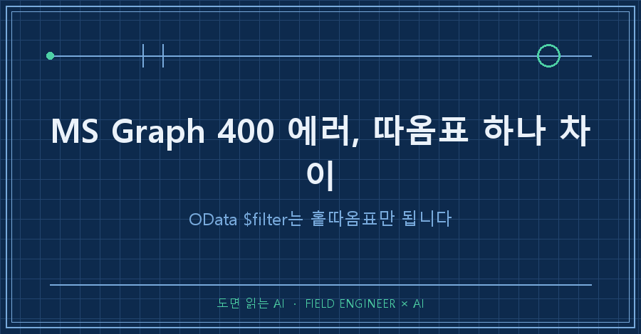
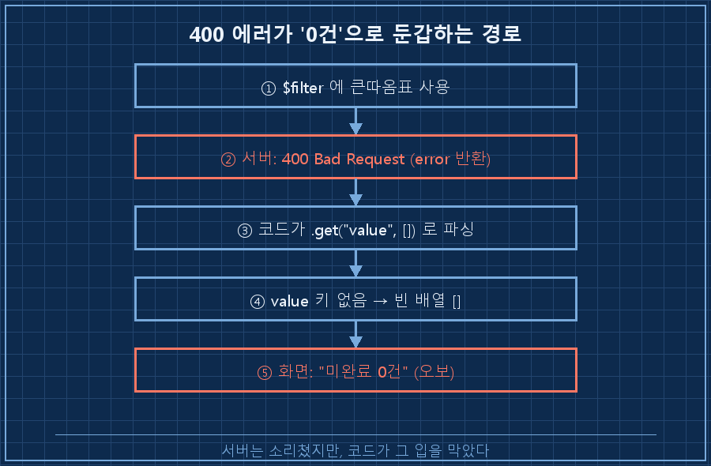
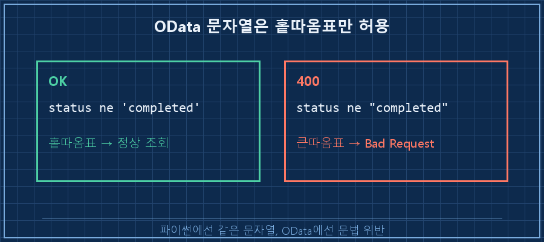
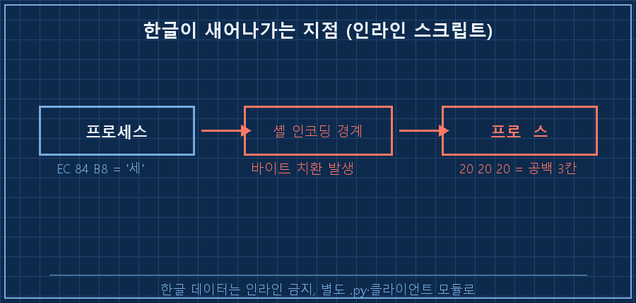

AI한테 "내 미완료 할일 목록 좀 뽑아줘"라고 시켰어요.
잠시 뒤 돌아온 답이 "미완료 0건, 다 끝내셨네요!"였고요.
근데 그때 제 할 일은 산더미였거든요.
결론부터 말할게요.
MS Graph API의 $filter에서 문자열은 홑따옴표('completed')만 됩니다. 큰따옴표를 쓰면 서버가 400 Bad Request를 돌려줘요.
그런데 더 무서운 건 이게 아니에요. AI가 짠 스크립트가 그 400 에러를 받아놓고도 조용히 "0건"으로 삼켜버린 거였어요.
원인은 어이없게도 따옴표 하나였습니다.
저는 수소 설비 제어판넬을 설계하는 15년차 엔지니어예요.
도면 그리고 PLC 코드 짜는 게 본업인데, 요즘은 손 많이 가는 반복 업무를 AI한테 스크립트로 짜서 맡기는 일이 부쩍 늘었어요.
이 글은 그렇게 AI한테 맡긴 자동화 하나가 저를 감쪽같이 속였던 기록이자, 같은 400 에러로 헤매는 분들을 위한 해결 노트예요.
(전제: 파이썬 + requests, MS Graph API v1.0 기준 / 2026년 7월 기준으로 확인한 내용이에요.)
1. 증상: 400 에러인데 화면엔 "0건"이 떴어요
가장 골치 아픈 유형이에요. 에러가 났는데 에러처럼 안 보이는 경우죠.
서버는 분명 400을 돌려줬는데, 스크립트는 태연하게 "미완료 0건"이라고 출력했어요.
문제의 코드는 대략 이렇게 생겼었어요.
# AI가 즉석에서 짜준 조회 스크립트 (문제 버전)
url = f'.../tasks?$filter=status ne "completed"&$top=200'
resp = requests.get(url, headers=headers)
tasks = resp.json().get("value", []) # ← 여기가 함정
print(f"미완료 {len(tasks)}건")resp.json().get("value", [])가 범인이에요.
400 응답의 본문에는 value 키가 없어요. 대신 error 객체가 들어있죠.
그러니 .get("value", [])는 없는 키를 찾다가 조용히 빈 배열을 돌려줘요.
빈 배열의 길이는 0이니까, 화면엔 "0건"이 뜨고요.
서버는 "네 요청 틀렸어"라고 소리쳤는데, 코드가 그 입을 막아버린 셈이에요.

2. 원인 하나: OData 문자열은 홑따옴표만 됩니다
$filter가 400을 뱉은 진짜 이유는 문법이었어요.
OData 쿼리에서 문자열 값은 반드시 홑따옴표로 감싸야 해요. 큰따옴표는 문법 위반이라 무조건 400이에요.
이건 프로그래밍 언어의 따옴표 습관과 충돌해서 실수하기 쉬워요.
파이썬에선 "completed"나 'completed'나 똑같은 문자열이잖아요?
근데 OData(서버가 읽는 쿼리 문법)에선 둘이 완전히 달라요.
status ne 'completed' → OK (홑따옴표)
status ne "completed" → 400 Bad Request (큰따옴표)특히 저처럼 AI한테 "한 줄짜리 스크립트로 빨리 짜줘"라고 시키면 이 함정에 잘 빠져요.
셸 명령 안에 파이썬을 인라인으로 욱여넣다 보면 바깥 따옴표와 안쪽 따옴표가 꼬여서, 결과적으로 URL에 큰따옴표가 박히거든요.

3. 원인 둘: 에러를 안 찍으면 영원히 못 찾아요
따옴표를 고쳐도, 애초에 400을 조용히 삼키는 구조가 남아있으면 다음에 또 당해요.
그래서 저는 규칙을 하나 박았어요. 응답 상태 코드를 확인하기 전엔 본문을 절대 신뢰하지 않는다.
.get("value", [])처럼 에러를 삼키는 패턴 대신, 300 이상이면 바로 멈추고 서버가 보낸 에러 메시지를 그대로 보여주게 했어요.
# 고친 버전 — 홑따옴표 + 에러 체크
resp = requests.get(
".../tasks",
headers=headers,
params={"$filter": "status ne 'completed'", "$top": 200},
)
if resp.status_code >= 300: # 에러면 즉시 멈춤
raise RuntimeError(f"API 에러: {resp.status_code} {resp.text[:200]}")
tasks = resp.json()["value"]
print(f"미완료 {len(tasks)}건")params 딕셔너리를 쓴 것도 포인트예요.
URL을 손으로 이어붙이면 따옴표·공백·특수문자가 꼬이는데, requests가 알아서 인코딩해주면 사람이 실수할 자리가 줄어들어요.
이렇게 바꾸고 나니, 다음부터는 필터를 틀리면 "0건"이 아니라 시뻘건 에러 메시지가 즉시 떴어요.
틀리면 시끄럽게 — 그게 자동화에선 오히려 안전이더라고요.
4. 덤으로 걸린 함정: 한글이 공백으로 새어나갔어요
같은 날 하나를 더 배웠어요.
셸 명령에 파이썬을 인라인으로 끼워 넣고 한글을 API로 보냈더니, "프로세스"의 "세"자가 사라진 채 등록됐어요.
원인을 뜯어보니, 한글 한 글자(UTF-8 3바이트)가 전달 과정에서 공백 세 칸으로 치환돼 있었어요.
보낸 값 : 프로세스 (EC 84 B8 = "세")
저장된 값: 프로 스 (20 20 20 = 공백 3칸)
윈도우 셸을 거치면서 인코딩 경계에서 바이트가 깨진 거예요.
그래서 규칙을 하나 더 세웠어요. 한글이 든 데이터를 API로 보낼 땐 인라인 스크립트 금지, 별도 .py 파일이나 기존 클라이언트 모듈로만 보낸다. 급하다고 한 줄로 우겨넣지 않기로요.
5. 확인 방법 (성공 판정 기준)
고친 게 진짜 먹었는지는 이렇게 확인해요.
- ☐ 일부러 필터에 큰따옴표를 넣어본다 → "0건"이 아니라 400 에러 메시지가 즉시 떠야 정상
- ☐ 정상 필터로 조회 → 실제 미완료 건수와 화면 숫자가 일치하는지 눈으로 대조
- ☐ 한글이 든 항목을 하나 등록 → 글자가 공백으로 새지 않았는지 확인
세 개가 다 통과하면, 이 자동화는 더 이상 저를 "0건"으로 속이지 못해요.
자주 묻는 질문
Q. $filter에 큰따옴표를 쓰면 무조건 400인가요?
네, OData 문법상 문자열 리터럴은 홑따옴표만 유효해서 큰따옴표는 400 Bad Request예요. MS Graph만이 아니라 OData를 따르는 API 대부분이 같아요. 파이썬에선 두 따옴표가 같아 보여도, 서버가 읽는 쿼리 문법에선 다르다는 걸 기억하시면 돼요.
Q. 400인데 왜 에러가 아니라 "0건"으로 나왔나요?
응답 본문을 .get("value", [])처럼 "없으면 빈 배열" 방식으로 파싱했기 때문이에요. 400 응답엔 value 키가 없고 error 키가 있는데, 이 패턴은 그걸 못 보고 빈 결과로 처리해버려요. 그래서 상태 코드부터 확인하는 순서가 중요해요.
Q. AI가 짜준 코드인데 이런 실수를 하나요?
해요. AI는 빠르게 그럴듯한 코드를 뽑지만, "이 API의 따옴표 규칙"이나 "에러 응답 형태" 같은 건 실제로 호출해봐야 드러나요. 그래서 저는 AI가 짠 API 코드는 반드시 일부러 틀린 값을 한 번 넣어보고, 에러가 제대로 터지는지부터 확인해요.
정리하면요
$filter 400 에러는 대부분 두 가지가 겹쳐서 사람을 오래 헤매게 해요.
| 볼 것 | 잘못된 습관 | 고친 규칙 |
|---|---|---|
| 문자열 따옴표 | "completed" (400) | 'completed' (홑따옴표) |
| URL 조립 | 손으로 문자열 이어붙이기 | params 딕셔너리에 맡기기 |
| 에러 처리 | .get("value", [])로 삼킴 | status_code >= 300이면 멈춤 |
| 한글 전송 | 인라인 스크립트 | 별도 .py·클라이언트 모듈 |
AI한테 자동화를 맡길수록, 저는 "잘 도는지"보다 "틀렸을 때 시끄럽게 우는지"를 먼저 봐요.
조용한 자동화가 제일 무섭거든요.
혹시 같은 400에 막혀 계셨다면 따옴표부터 바꿔보세요.
다음엔 AI가 짜준 코드를 배포 전에 어떻게 한 번 걸러내는지, 제 검증 순서를 풀어볼게요 — 이런 API 삽질들은 종류별로 makefield.ai에 정리해두는 중이에요.
---
태그: #GraphAPI400에러 #ODatafilter #BadRequest해결 #MSGraph필터 #파이썬API오류 #statusnecompleted #그래프API필터 #API에러처리 #requests400 #파이썬requests #AI코딩검증 #업무자동화 #현장엔지니어 #제조업AI #도면읽는AI